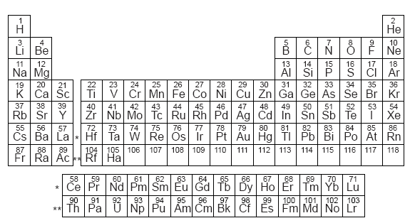

Atomic Structure


The atom
Originally thought of as the smallest indivisible particle, the atom is the basic building block of matter; it is considered the samllest particle of an element that retains all characteristics of the element. The atom, as we know it today, has gone through many models and has become universally accepted by the electron-cloud model. In this model the atom's structure follows:
- The atom's atomic mass is stored in the nucleus or center of the atom
- The nucleus is comprised of protons and nuetrons
- An electron cloud, comprised of mostly empty space and electrons, surrounds the atom
| Proton | Neutron | Electron | |
|---|---|---|---|
| Charge | positive | None | Negative |
| Mass | 1 atomic mass unit(amu) | 1 atomic mass unit(amu) | Hardly any (1/1836 atomic mass unit) |
| Discovered by | Ernest Rutherford | James Chadwick | J.J. Thomson |
Periodicity

Periodic trends are specific patterns that are present in the periodic table that illustrate different aspects of a certain element, including its size and its electronic properties. Major periodic trends include: electronegativity, ionization energy, electron affinity, atomic radius, melting point, and metallic character. Periodic trends, arising from the arrangement of the periodic table, provide chemists with an invaluable tool to quickly predict an element's properties. These trends exist because of the similar atomic structure of the elements within their respective group families or periods, and because of the periodic nature of the elements. These periodic trends are based on the Periodic Law which states that if the chemical elements are listed in order of increasing atomic number, many of their properties go through cyclical changes, with elements of similar properties recurring at intervals.[1] For example, after arranging elements in their increasing atomic numbers, many of the physical and chemical properties of Lithium are recurred into Sodium such as its vigorous reactivity with water, which again recurs in the next cycle starting with Potassium. This principle was discovered after number of investigations done by scientists in nineteenth century such as Lothar Meyer and Dmitri Mendeleev. Initially, no theoretical explanation for the Periodic Law was available and it was used only as an empirical principle. But, with the development of electronic theory of atomic structure, it became possible to understand the theoretical basis for the Periodic Law. From the modern periodic table, it is evident that the periodic recurrence of elements with similar physical and chemical properties, when the elements are listed in order of increasing atomic number, results directly from the periodic recurrence of similar electronic configurations in the outer shells of respective atoms. Discovery of Periodic Law constitutes one of the most singularly important events in the history of chemical science. Almost every chemist makes extensive and continued use of Periodic Law. Periodic Law also led to the development of the periodic table, which is widely used nowadays. The atomic radius is the distance from the atomic nucleus to the outermost stable electron orbital in an atom that is at equilibrium. The atomic radii tend to decrease across a period from left to right. The atomic radius usually increases while going down a group due to the addition of a new energy level (shell). However, atomic radii tend to increase diagonally, since the number of electrons has a larger effect than the sizeable nucleus. For example, lithium (145 picometer) has a smaller atomic radius than magnesium (150 picometer). Atomic radius can be further specified as: Covalent radius: half the distance between two atoms of a diatomic compound, singly bonded. Van der Waals radius: half the distance between the nuclei of atoms of different molecules in a lattice of covalent molecules. Metallic radius: half the distance between two adjacent nuclei of atoms in a metallic lattice. Ionic radius: half the distance between two nuclei The ionization potential is the minimum amount of energy required to remove one electron from each atom in a mole of atoms in the gaseous state. The first ionization energy is the energy required to remove two, the ionization energy is the energy required to remove the atom's nth electron, after the (n−1) electrons before it has been removed. Trend-wise, ionization energy tends to increase while one progresses across a period because the greater number of protons (higher nuclear charge) attract the orbiting electrons more strongly, thereby increasing the energy required to remove one of the electrons. Ionization energy and ionization potentials are completely different. The potential is an intensive property and it is measured by "volt"; whereas the energy is an extensive property expressed by "eV" or "kJ/mole". As one progresses down a group on the periodic table, the ionization energy will likely decrease since the valence electrons are farther away from the nucleus and experience a weaker attraction to the nucleus's positive charge. There will be an increase of ionization energy from left to right of a given period and a decrease from top to bottom. As a rule, it requires far less energy to remove an outer-shell electron than an inner-shell electron. As a result, the ionization energies for a given element will increase steadily within a given shell, and when starting on the next shell down will show a drastic jump in ionization energy. Simply put, the lower the principal quantum number, the higher the ionization energy for the electrons within that shell. The exceptions are the elements in the boron and oxygen family, which require slightly less energy than the general trend. The electron affinity of an atom can be described either as the energy gained by an atom when an electron is added to it, or conversely as the energy required to detach an electron from a singly charged anion. The sign of the electron affinity can be quite confusing, as atoms that become more stable with the addition of an electron (and so are considered to have a higher electron affinity) show a decrease in potential energy; i.e. the energy gained by the atom appears to be negative. For atoms that become less stable upon gaining an electron, potential energy increases, which implies that the atom gains energy. In such a case, the atom's electron affinity value is positive.[2] Consequently, atoms with a more negative electron affinity value are considered to have a higher electron affinity (they are more receptive to gaining electrons), and vice versa. However, in the reverse scenario where electron affinity is defined as the energy required to detach an electron from an anion, the energy value obtained will be of the same magnitude but have the opposite sign. This is because those atoms with a high electron affinity are less inclined to give up an electron, and so take more energy to remove the electron from the atom. In this case, the atom with the more positive energy value has the higher electron affinity. As one progresses from left to right across a period, the electron affinity will increase. Although it may seem that Fluorine should have the greatest electron affinity, the small size of fluorine generates enough repulsion that Chlorine has the greatest electron affinity. Electronegativity is a measure of the ability of an atom or molecule to attract pairs of electrons in the context of a chemical bond. The type of bond formed is largely determined by the difference in electronegativity between the atoms involved, using the Pauling scale. Trend-wise, as one moves from left to right across a period in the periodic table, the electronegativity increases due to the stronger attraction that the atoms obtain as the nuclear charge increases. Moving down in a group, the electronegativity decreases due to the longer distance between the nucleus and the valence electron shell, thereby decreasing the attraction, making the atom have less of an attraction for electrons or protons. Valence electrons are the electrons in the outermost electron shell of an isolated atom of an element. Sometimes, it is also regarded as the basis of Modern Periodic Table. In a period, the number of valence electrons increases (mostly for light metal/elements) as we move from left to right side. However, in a group this periodic trend is constant, that is the number of valence electrons remains the same. However, this periodic trend is sparsely followed for heavier elements (elements with atomic number greater than 20), especially for lanthanide and actinide series. It is also important to consider the core electrons when speaking about the valence electrons. Metallic properties increase down groups as decreasing attraction between the nuclei and the outermost electrons causes the outermost electrons to be loosely bound and thus able to conduct heat and electricity. Across the period, increasing attraction between the nuclei and the outermost electrons causes metallic character to decrease. Non-metallic property increases across a period and decreases down the group due to the same reason.
Bonding

To understand bonding, we must first review basic concepts about structure and atoms. Lewis structures give atomic connectivity: they tell us which atoms are physically connected to which atoms. The shape of a molecule is determined by its bond angles. The angles made by the lines joining the nuclei of the atoms in a molecule are the bond angles. Consider CCl4: Experimentally we find all Cl–C–Cl bond angles are 109.5°. Therefore, the molecule cannot be planar. All Cl atoms are located at the vertices of a tetrahedron with the C at its center. In order to predict molecular shape, we assume that the valence electrons repel each other. Therefore, the molecule adopts the three-dimensional geometry that minimizes this repulsion. We call this model the Valence Shell Electron Pair Repulsion (VSEPR) model. The VSEPR Model A covalent bond forms between two atoms when a pair of electrons occupies the space between the atoms. This is a bonding pair of electrons. Such a region is an electron domain. A nonbonding pair or lone pair of electrons defines an electron domain located principally on one atom. Example: NH3 has three bonding pairs and one lone pair. VSEPR predicts that the best arrangement of electron domains is the one that minimizes the repulsions among them. The arrangement of electron domains about the central atom of a molecule is its electron-domain geometry. There are five different electron-domain geometries: linear (two electron domains), trigonal planar (three domains), tetrahedral (four domains), trigonal bipyramidal (five domains) and octahedral (six domains). The molecular geometry is the arrangement of the atoms in space. To determine the shape of a molecule we must distinguish between lone pairs and bonding pairs. We use the electron-domain geometry to help us predict the molecular geometry. Draw the Lewis structure. Count the total number of electron domains around the central atom. Arrange the electron domains in one of the five geometries to minimize electron-electron repulsion. Next, determine the 3-D structure of the molecule. We ignore lone pairs in the molecular geometry. Describe the molecular geometry in terms of the the bonded atoms. Multiple bonds are counted as one electron domain. The Effect of Nonbonding Electrons and Multiple Bonds on Bond Angles We refine VSEPR to predict and explain slight distortions from “ideal” geometries. Consider three molecules with tetrahedral electron domain geometries: CH4, NH3, and H2O. angular arrangement of By experiment, the H–X–H bond angle decreases from C (109.5° in CH4) to N (107° in NH3) to O (104.5° in H2O). A bonding pair of electrons is attracted by two nuclei. They do not repel as much as lone pairs which are primarily attracted by only one nucleus. Electron domains for nonbonding electron pairs thus exert greater repulsive forces on adjacent electron domains. They tend to compress the bond angles. The bond angle decreases as the number of nonbonding pairs increases.Similarly, electrons in multiple bonds repel more than electrons in single bonds (e.g., in Cl2CO the O–C–Cl angle is 124.3°, and the Cl–C–Cl bond angle is 111.4°). We will encounter eleven basic molecular shapes: three atoms (AB2): linear bent four atoms (AB3): trigonal planar trigonal pyramidal t-shaped five atoms (AB4): tetrahedral square planar seesaw six atoms (AB5): trigonal bipyramidal square pyramidal seven atoms (AB6): octahedral Electron Domains Electron-Domain Geometry Predicted Bond Angle(s) Molecular Geometry 0 Lone Pair 1 Lone Pair 2 Lone Pair 2 Linear 180o Linear 3 Trigonal Planar 120o Trigonal Planar Bent 4 Tetrahedral 109.5o Tetrahedral Trigonal Pyramidal Bent 5 Trigonal Bipyramidal 90o, 120o Trigonal Bipyramidal Seesaw T-shaped 6 Octahedral 90o Octahedral Square Pyramidal Square Planar Molecules with Expanded Valence Shells Atoms that have expanded octets have five electron domains (trigonal bipyramidal) or six electron domains (octahedral) electron-domain geometries. Trigonal bipyramidal structures have a plane containing three electron pairs. The fourth and fifth electron pairs are located above and below this plane. In this structure two trigonal pyramids share a base. For octahedral structures, there is a plane containing four electron pairs. Similarly, the fifth and sixth electron pairs are located above and below this plane. Two square pyramids share a base. Consider a trigonal bipyramid. The three electron pairs in the plane are called equatorial. The two electron pairs above and below this plane are called axial. The axial electron pairs are 180° apart and 90° to the equatorial electrons. The equatorial electron pairs are 120° apart. To minimize electron–electron repulsion, nonbonding pairs are always placed in equatorial positions and bonding pairs are placed in either axial or equatorial positions. Consider an octahedron. The four electron pairs in the plane are at 90° to each other. The two axial electron pairs are 180° apart and at 90° to the electrons in the plane. Because of the symmetry of the system, each position is equivalent. If we have five bonding pairs and one lone pair, it does not matter where the lone pair is placed. The molecular geometry is square pyramidal.If two non-bonding pairs are present, the repulsions are minimized by pointing them toward opposite sides of the octahedron.The molecular geometry is square planar. Shapes of Larger Molecules In acetic acid, CH3COOH, there are three interior atoms: two C and one O. We assign the molecular (and electron-domain) geometry about each interior atom separately: The geometry around the first C is tetrahedral. The geometry around the second C is trigonal planar. The geometry around the O is bent (tetrahedral). Molecular Shape and Molecular Polarity Polar molecules interact with electric fields. We previously saw that binary compounds are polar if their centers of negative and positive charge do not coincide. If two charges, equal in magnitude and opposite in sign, are separated by a distance d, then a dipole is established. The dipole moment, μ is given by μ = Qr where Q is the magnitude of the charge. We can extend this to polyatomic molecules. For each bond in a polyatomic molecule, we can consider the bond dipole. The dipole moment due only to the two atoms in the bond is the bond dipole. Because bond dipoles and dipole moments are vector quantities, the orientation of these individual dipole moments determines whether the molecule has an overall dipole moment. In CO2 each ∂+C−O∂– dipole is canceled because the molecule is linear. In H2O, the ∂+H−O∂– dipoles do not cancel because the molecule is bent. It is possible for a molecule with polar bonds to be either polar or nonpolar. Example: For diatomic molecules: polar bonds always result in an overall dipole moment. For triatomic molecules: if the molecular geometry is bent, there is an overall dipole moment. if the molecular geometry is linear and the B atoms are the same, there is no overall dipole moment. if the molecular geometry is linear and the B atoms are different, there is an overall dipole moment. For molecules with four atoms: if the molecular geometry is trigonal pyramidal, there is an overall dipole moment. if the molecular geometry is trigonal planar and the B atoms are identical, there is no overall dipole μ. if the molecular geometry is trigonal planar and the B atoms are different, there is an overall dipole μ. Covalent Bonding and Orbital Overlap Lewis structures and VSEPR theory give us the shape and location of electrons in a molecule. They do not explain why a chemical bond forms. How can quantum mechanics be used to account for molecular shape? What orbitals are involved in bonding? We use valence-bond theory. A covalent bond forms when the orbitals on two atoms overlap. The shared region of space between the orbitals is called the orbital overlap. There are two electrons (usually one from each atom) of opposite spin in the orbital overlap. As two nuclei approach each other their atomic orbitals overlap. As the amount of overlap increases, the energy of the interaction decreases. At some distance the minimum energy is reached. The minimum energy corresponds to the bonding distance (or bond length). As the two atoms get closer, their nuclei begin to repel and the energy increases. At the bonding distance, the attractive forces between nuclei and electrons just balance the repulsive forces (nucleus-nucleus, electron-electron). Hybrid Orbitals We can apply the idea of orbital overlap and valence-bond theory to polyatomic molecules. sp Hybrid Orbitals Consider the BeF2 molecule. Be has a 1s22s2 electron configuration. There is no unpaired electron available for bonding. We conclude that the atomic orbitals are not adequate to describe orbitals in molecules. We know that the F–Be–F bond angle is 180° (VSEPR theory). We also know that one electron from Be is shared with each one of the unpaired electrons from F. We assume that the Be orbitals in the Be–F bond are 180° apart.We could promote an electron from the 2s orbital on Be to the 2p orbital to get two unpaired electrons for bonding. BUT the geometry is still not explained. We can solve the problem by allowing the 2s and one 2p orbital on Be to mix or form two new hybrid orbitals (a process called hybridization). The two equivalent hybrid orbitals that result from mixing an s and a p orbital and are called sp hybrid orbitals. The two lobes of an sp hybrid orbital are 180° apart. According to the valence-bond model, a linear arrangement of electron domains implies sp hybridization. Since only one of 2p orbitals of Be has been used in hybridization, there are two unhybridized p orbitals remaining on Be. The electrons in the sp hybrid orbital form shared electron bonds with the two fluorine atoms. sp2 and sp3 Hybrid Orbitals Important: when we mix n atomic orbitals we must get n hybrid orbitals. Three sp2 hybrid orbitals are formed from hybridization of one s and two p orbitals. Thus, there is one unhybridized p orbital remaining. The large lobes of the sp2 hybrids lie in a trigonal plane. Molecules with trigonal planar electron-pair geometries have sp2 orbitals on the central atom. Four sp3 hybrid orbitals are formed from hybridization of one s and three p orbitals. Therefore, there are four large lobes. Each lobe points towards the vertex of a tetrahedron. The angle between the large lobes is 109.5°. Molecules with tetrahedral electron pair geometries are sp3 hybridized. Hybridization Involving d Orbitals Since there are only three p orbitals, trigonal bipyramidal and octahedral electron-pair geometries must involve d orbitals. Trigonal bipyramidal electron pair geometries require sp3d hybridization. Octahedral electron pair geometries require sp3d2 hybridization. Electron pair VSEPR geometry corresponds well with the hybridization. Use of d orbitals in making hybrid orbitals corresponds well with the idea of an expanded octet. Summary- We need to know the electron-domain geometry before we can assign hybridization. To assign hybridization: Draw a Lewis structure. Assign the electron-domain geometry using VSEPR theory. Specify the hybridization required to accommodate the electron pairs based on their geometric arrangement. Name the geometry by the positions of the atoms. Multiple Bonds- In the covalent bonds we have seen so far the electron density has been concentrated symmetrically about the internuclear axis. Sigma (σ) bonds: electron density lies on the axis between the nuclei. All single bonds are σ bonds. What about overlap in multiple bonds? Pi (π) bonds: electron density lies above and below the plane of the nuclei. A double bond consists of one σ bond and one π bond. Bond Order A triple bond has one σ bond and two π bonds. Bond order = 1 for a single bond. Bond order = 2 for a double bond. Bond order = 3 for a triple bond. Often, the p orbitals involved in π bonding come from unhybridized orbitals. For example: ethylene, C2H4, has: One σ and one π bond. Both C atoms are sp2 hybridized. Both C atoms have trigonal planar electron-pair and molecular geometries. For example: acetylene, C2H2:The electron-domain geometry of each C is linear. Therefore, the C atoms are sp hybridized.The sp hybrid orbitals form the C–C and C–H σ bonds. There are two unhybridized p orbitals on each C atom. Both unhybridized p orbitals form the two π bonds; One π bond is above and below the plane of the nuclei; One π bond is in front and behind the plane of the nuclei. For triple bonds, one π bond is always above and below and the other is in front and behind the plane of the nuclei. Delocalized π Bonding- So far all the bonds we have encountered are localized between two nuclei. In the case of benzene: There are six C–C σ bonds and six C–H σ bonds. Each C atom is sp2 hybridized. There is one unhybridized p orbital on each carbon atom, resulting in six unhybridized carbon p orbitals in a ring. In benzene there are two options for the three π bonds: localized between carbon atoms or delocalized over the entire ring (i.e., the π electrons are shared by all six carbon atoms). Experimentally, all C–C bonds are the same length in benzene. Therefore, all C–C bonds are of the same type (recall single bonds are longer than double bonds). General Conclusions Every pair of bonded atoms shares one or more pairs of electrons. Two electrons shared between atoms on the same axis as the nuclei are σ bonds. σ bonds are always localized in the region between two bonded atoms. If two atoms share more than one pair of electrons, the additional pairs form π bonds. When resonance structures are possible, delocalization is also possible.
Atomic Numbers

In chemistry and physics, the atomic number of a chemical element (also known as its proton number) is the number of protons found in the nucleus of an atom of that element, and therefore identical to the charge number of the nucleus. It is conventionally represented by the symbol Z. The atomic number uniquely identifies a chemical element. In an uncharged atom, the atomic number is also equal to the number of electrons. The atomic number, Z, should not be confused with the mass number, A, which is the number of nucleons, the total number of protons and neutrons in the nucleus of an atom. The number of neutrons, N, is known as the neutron number of the atom; thus, A = Z + N (these quantities are always whole numbers). Since protons and neutrons have approximately the same mass (and the mass of the electrons is negligible for many purposes) and the mass defect of nucleon binding is always small compared to the nucleon mass, the atomic mass of any atom, when expressed in unified atomic mass units (making a quantity called the "relative isotopic mass"), is roughly (to within 1%) equal to the whole number A. Atoms with the same atomic number Z but different neutron numbers N, and hence different atomic masses, are known as isotopes. A little more than three-quarters of naturally occurring elements exist as a mixture of isotopes (see monoisotopic elements), and the average isotopic mass of an isotopic mixture for an element (called the relative atomic mass) in a defined environment on Earth, determines the element's standard atomic weight. Historically, it was these atomic weights of elements (in comparison to hydrogen) that were the quantities measurable by chemists in the 19th century. The conventional symbol Z comes from the German word Zahl meaning number/numeral/figure, which, prior to the modern synthesis of ideas from chemistry and physics, merely denoted an element's numerical place in the periodic table, whose order is approximately, but not completely, consistent with the order of the elements by atomic weights. Only after 1915, with the suggestion and evidence that this Z number was also the nuclear charge and a physical characteristic of atoms, did the word Atomzahl (and its English equivalent atomic number) come into common use in this context.
Groups
The group number is an identifier used to describe the column of the standard periodic table in which the element appears. Groups 1-2 (except hydrogen) and 13-18 are termed main group elements. Groups 3-11 are termed transition elements. Transition elements are those whose atoms have an incomplete d-subshell or whose cations have an incomplete d-subshell. Main group elements in the first two rows of the table are called typical elements. The first row of the f-block elements are called lanthanoids (or, less desirably, lanthanides. The second row of the f-block elements are called actanoids (or, less desirably, actanides. The following names for specific groups in the periodic table are in common use: Group 1: alkali metals Group 2: alkaline earth metals Group 11: coinage metals (not an IUPAC approved name) Group 15: pnictogens (not an IUPAC approved name) Group 16: chalcogens Group 17: halogens Group 18: noble gases In addition, groups may be idenitifed by the first element in each group - so the Group 16 elements is sometimes called the oxygen group. Group Trends for the Active Metals The alkali metals (group 1A) and the alkaline earth metals (group 2A) are often called the active metals. Group 1A: The Alkali Metals Alkali metals are all soft. Their chemistry is dominated by the loss of their single s electron: MM+ + e– Reactivity increases as we move down the group. Alkali metals react with hydrogen to form hydrides. In hydrides, the hydrogen is present as H–, called the hydride ion. 2M(s) + H2(g)2MH(s) Alkali metals Alkali metals Alkali metals react with water to form MOH and hydrogen gas: 2M(s) + 2H2O(l) 2MOH(aq) + H2(g) produce different oxides when reacting with O2: Nonmetal oxide + wateracid CO2(g) + H2O(l)H2CO3(aq) P4O10(s) + 6H2O(l)4H3PO4(aq) 4Li(s) + O2(g)2Li2O(s) 2Na(s) + O2 (g) Na2O2(s) K(s) + O2 (g)KO2(s) emit characteristic colors when placed in a high-temperature flame. (oxide) (peroxide) (superoxide) The s electron is excited by the flame and emits energy when it returns to the ground state. The Na line occurs at 589 nm (yellow), characteristic of the 3p3s transition. The Li line is crimson red. The K line is lilac. Group 2A: The Alkaline Earth Metals Alkaline earth metals are harder and more dense than the alkali metals. Their chemistry is dominated by the loss of two s electrons: Reactivity increases down the group. Be does not react with water. Mg will only react with steam. Ca and the elements below it react with water at room temperature as follows: Ca(s) + 2H2O(l)Ca(OH)2(aq) + H2(g) 7.8 Group Trends for Selected Nonmetals Hydrogen Hydrogen is a unique element. It most often occurs as a colorless diatomic gas, H2. Reactions between hydrogen and nonmetals can be very exothermic: 2H2(g) + 2O2(g)2H2O(l) ∆Hf o = –571.7 kJ Nonmetal oxide + basesalt + water CO2(g) + 2NaOH(aq)Na2CO3(aq) + H2O(l) MM2+ + 2e– Mg(s) + Cl2(g)MgCl2(s) 2Mg(s) + O2(g)2MgO(s) It can either gain another electron to form the hydride ion, H–, or lose its electron to become H+: 2Na(s) + H2(g)2NaH(s) 2H2(g) + O2(g)2H2O(l) H+ is a proton.The aqueous chemistry of hydrogen is dominated by H+(aq). Group 6A: The Oxygen Group As we move down the group the metallic character increases. O2 is a gas, Te is a metalloid, Po is a metal. There are two important forms of oxygen: O2 and ozone, O3. O2 and O3 are allotropes. Allotropes are different forms of the same element in the same state (in this case, gaseous). Ozone can be prepared from oxygen: Ozone is pungent and toxic. 3O2(g)2O3(g) ∆Hfo = +284.6 kJ Oxygen (or dioxygen, O2) is a potent oxidizing agent since the O2– ion has a noble gas configuration. There are two oxidation states for oxygen: –2 (e.g., H2O) and –1 (e.g., H2O2). Sulfur is another important member of this group. The most common form of sulfur is yellow S8. Sulfur tends to form S2– in compounds (sulfides). Group 7A: The Halogens Group 7A elements are known as the halogens ("salt formers"). The chemistry of the halogens is dominated by gaining an electron to form an anion: X2 + 2e– 2X– Fluorine is one of the most reactive substances known: 2F2(g) + 2H2O(l)4HF(aq) + O2(g) ∆H = –758.9 kJ All halogens consist of diatomic molecules, X2. Chlorine is the most industrially useful halogen. The reaction between chorine and water produces hypochlorous acid (HOCl), which is used to disinfect swimming pool water: Cl2(g) + H2O(l)HCl(aq) + HOCl(aq) Halogens react with hydrogen to form gaseous hydrogen halide compounds: H2(g) + X2 2HX(g) Hydrogen compounds of the halogens are all strong acids with the exception of HF. Group 8A: The Noble Gases The group 8A elements are known as the noble gases. These are all nonmetals and monoatomic. They are notoriously unreactive because they have completely filled s and p subshells. In 1962 the first compounds of the noble gases were prepared: XeF2, XeF4, and XeF6.
Metals vs Non-metals

Metals appear lustrous, form mixtures (alloys) when combined with other metals, and tend to lose or share electrons when they react with other substances; and each forms at least one predominantly basic oxide. Most metals are silvery looking, high density, relatively soft and easily deformed solids with good electrical and thermal conductivity, closely packed structures, low ionisation energies and electronegativities, and are found naturally in combined states. Some metals appear coloured (Cu, Cs, Au), have low densities (e.g. Be, Al) or very high melting points, are liquids at or near room temperature, are brittle (e.g. Os, Bi), not easily machined (e.g. Ti, Re), or are noble (hard to oxidise) or have nonmetallic structures (Mn and Ga are structurally analogous to, respectively, white P and I). Metals comprise the large majority of the elements, and can be subdivided into several different categories. From left to right in the periodic table, these categories include the highly reactive alkali metals; the less reactive alkaline earth metals, lanthanides and radioactive actinides; the archetypal transition metals, and the physically and chemically weak post-transition metals. Specialized subcategories such as the refractory metals and the noble metals also exist. Metalloids are metallic looking brittle solids; tend to share electrons when they react with other substances; have weakly acidic or amphoteric oxides; and are usually found naturally in combined states. Most are semiconductors, and moderate thermal conductors, and have structures that are more open than those of most metals. Some metalloids (As, Sb) conduct electricity like metals. The metalloids, as the smallest major category of elements, are not subdivided further. Nonmetals have open structures (unless solidified from gaseous or liquid forms); tend to gain or share electrons when they react with other substances; and do not form distinctly basic oxides. Most are gases at room temperature; have relatively low densities; are poor electrical and thermal conductors; have relatively high ionisation energies and electronegativities; form acidic oxides; and are found naturally in uncombined states in large amounts. Some nonmetals (C, black P, S and Se) are brittle solids at room temperature (although each of these also have malleable, pliable or ductile allotropes). From left to right in the periodic table, the nonmetals can be subdivided into the polyatomic nonmetals which, being nearest to the metalloids, show some incipient metallic character; the diatomic nonmetals, which are essentially nonmetallic; and the monatomic noble gases, which are almost completely inert.